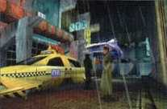
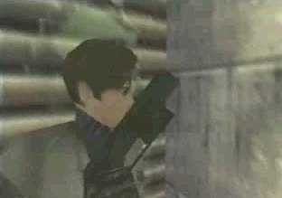
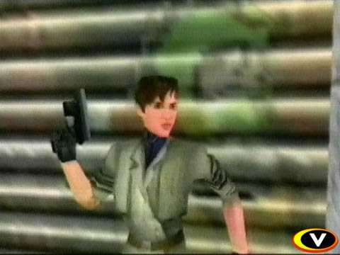
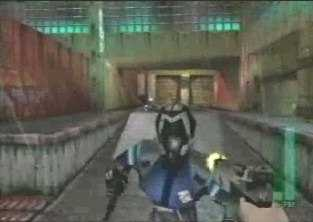
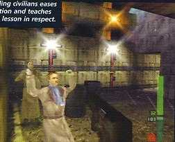
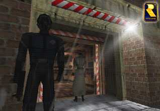

|
| Perfect
Dark Version Beta : Chicago |
| Dans
les Magazines, il était question d'un Niveau se situant au
Japon, puis ce fut en fait Chinatown, et enfin Chicago. Evidemment,
ces infos étaient des suppositions en regardant uniquement
les photos. |

Ci-dessous, la Première Photo montre Joanna commençant avec un Shotgun (Fusil à Pompe) tandis que la Deuxième Photo nous montre la Cinématique d'Introduction, avec un Falcon 2 dans les Mains, qui n'est plus là dans la Version Finale. |
 
La Photo ci-dessous est interessante. On voit clairemment un Datadyne Shocktrooper foncer sur Joanna, et celle-ci a un Magsec 4. En fait, dans le Scenario Beta, Joanna devait entrer dans le Building G5, mais avec en plus les Forces Datadyne aux Fesses ! |

Les Trois Photos ci-dessous sont sympas. Photo de Gauche - Il manque sur la droite la Benne ou se trouve le Bombspy ainsi que les 3 Tonneaux empilés. Photo du Milieu - Les Civils avaient l'apparence de ceux de Goldeneye. Je pense que Rare les a rhabillés comme les Agents du FBI pour rendre la situation plus dure. Photo de Droite - encore une image de Civil, cette fois ressemblant au Type du Niveau Extraction (Deuxième Photo). |


Ci-dessous, sur la Gauche de la Photo, on voit une Caisse comme celle de la Zone 51 (Caisse Volante). Notez égalemment les Double Falcon 2 Scope. Enfin, une bien belle image nous montrant un autre Garde Datadyne. Apparemment, il n'y a pas eu de diversion. Comme si on devait se faufiler vers l'Entrée comme un Furet... |
